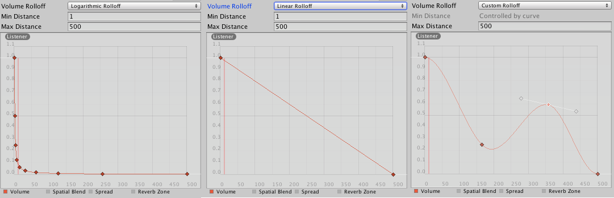

Audio Source
The Audio Source plays back an Audio Clip in the scene. The clip can be played to an audio listener or through an audio mixer. The audio source can play any type of Audio Clip and can be configured to play these as 2D, 3D, or as a mixture (SpatialBlend). The audio can be spread out between speakers (stereo to 7.1) (Spread) and morphed between 3D and 2D (SpatialBlend). This can be controlled over distance with falloff curves. Also, if the listener is within one or multiple Reverb Zones, reverberation is applied to the source. Individual filters can be applied to each audio source for an even richer audio experience. See Audio Effects for more details.

Properties
| Property: | Function: |
|---|---|
| Audio Clip | Reference to the sound clip file that will be played. |
| Output | The sound can be output through an audio listener or an audio mixer. |
| Mute | If enabled the sound will be playing but muted. |
| Bypass Effects | This is to quickly "by-pass" filter effects applied to the audio source. An easy way to turn all effects on/off. |
| Bypass Listener Effects | This is to quickly turn all Listener effects on/off. |
| Bypass Reverb Zones | This is to quickly turn all Reverb Zones on/off. |
| Play On Awake | If enabled, the sound will start playing the moment the scene launches. If disabled, you need to start it using the Play() command from scripting. |
| Loop | Enable this to make the Audio Clip loop when it reaches the end. |
| Priority | Determines the priority of this audio source among all the ones that coexist in the scene. (Priority: 0 = most important. 256 = least important. Default = 128.). Use 0 for music tracks to avoid it getting occasionally swapped out. |
| Volume | How loud the sound is at a distance of one world unit (one meter) from the Audio Listener. |
| Pitch | Amount of change in pitch due to slowdown/speed up of the Audio Clip. Value 1 is normal playback speed. |
| Stereo Pan | Sets the position in the stereo field of 2D sounds. |
| Spatial Blend | Sets how much the 3D engine has an effect on the audio source. |
| Reverb Zone Mix | Sets the amount of the output signal that gets routed to the reverb zones. The amount is linear in the (0 - 1) range, but allows for a 10 dB amplification in the (1 - 1.1) range which can be useful to achieve the effect of near-field and distant sounds. |
| 3D Sound Settings | Settings that are applied proportionally to the Spatial Blend parameter. |
| Doppler Level | Determines how much doppler effect will be applied to this audio source (if is set to 0, then no effect is applied). |
| Spread | Sets the spread angle to 3D stereo or multichannel sound in speaker space. |
| Min Distance | Within the MinDistance, the sound will stay at loudest possible. Outside MinDistance it will begin to attenuate. Increase the MinDistance of a sound to make it 'louder' in a 3d world, and decrease it to make it 'quieter' in a 3d world. |
| Max Distance | The distance where the sound stops attenuating at. Beyond this point it will stay at the volume it would be at MaxDistance units from the listener and will not attenuate any more. |
| Rolloff Mode | How fast the sound fades. The higher the value, the closer the Listener has to be before hearing the sound. (This is determined by a Graph). |
| - Logarithmic Rolloff | The sound is loud when you are close to the audio source, but when you get away from the object it decreases significantly fast. |
| - Linear Rolloff | The further away from the audio source you go, the less you can hear it. |
| - Custom Rolloff | The sound from the audio source behaves accordingly to how you set the graph of roll offs. |
Types of Rolloff
There are three Rolloff modes: Logarithmic, Linear and Custom Rolloff. The Custom Rolloff can be modified by modifying the volume distance curve as described below. If you try to modify the volume distance function when it is set to Logarithmic or Linear, the type will automatically change to Custom Rolloff.

Distance Functions
There are several properties of the audio that can be modified as a function of the distance between the audio source and the audio listener.
Volume: Amplitude(0.0 - 1.0) over distance.
Spatial Blend: 2D (original channel mapping) to 3D (all channels downmixed to mono and attenuated according to distance and direction).
Spread: Angle (degrees 0.0 - 360.0) over distance.
Low-Pass (only if LowPassFilter is attached to the AudioSource): Cutoff Frequency (22000.0-10.0) over distance.
Reverb Zone: Amount of signal routed to the reverb zones. Note that the volume property and distance and directional attenuation are applied to the signal first and therefore affect both the direct and reverberated signals.

To modify the distance functions, you can edit the curves directly. For more information, see the guide to Editing Curves.
Creating Audio Sources
Audio Sources don't do anything without an assigned Audio Clip. The Clip is the actual sound file that will be played back. The Source is like a controller for starting and stopping playback of that clip, and modifying other audio properties.
To create a new Audio Source:
- Import your audio files into your Unity Project. These are now Audio Clips.
- Go to GameObject->Create Empty from the menubar.
- With the new GameObject selected, select Component->Audio->Audio Source.
- Assign the Audio Clip property of the Audio Source Component in the Inspector.
Note: If you want to create an Audio Source just for one Audio Clip that you have in the Assets folder then you can just drag that clip to the scene view - a GameObject with an Audio Source component will be created automatically for it. Dragging a clip onto on existing GameObject will attach the clip along with a new Audio Source if there isn't one already there. If the object does already have an Audio Source then the newly dragged clip will replace the one that the source currently uses.